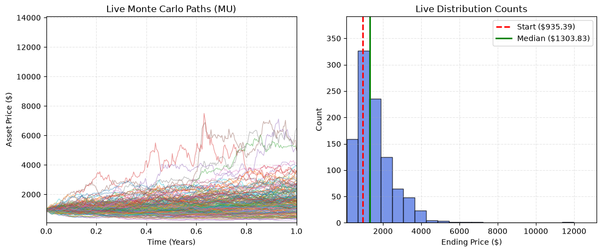

--- Model Calibration Parameters ---
Latest Stock Price (IAP) : $935.39
Calculated Annual Drift : 53.7318%
Calculated Volatility : 51.4216%
The main formula for the Geometric Brownian Motion (GBM) is: \[ dS_t = \mu S_t dt + \sigma S_t dW_t\] Where: \(S_t\) = Stock Price at time t \(\mu\) = expected annual return (drift) \(\sigma\) = annual volatility \(dt\) = small change in time \(dW_t\). = Brownian motion/random market shock
For our Monte Carlo Simulation our Equation becomes \[ S_{t+\Delta} = S_t exp[(\mu-\frac{1}{2}\sigma^2) \Delta t + \sigma \sqrt{ \Delta t }Z]\]
Where \[ Z \sim N(0,1) \]
--- Model Calibration Parameters ---
Latest Stock Price (IAP) : $935.39
Calculated Annual Drift : 53.7318%
Calculated Volatility : 51.4216%
The Heston model consists of two stochastic differential equations with a large amount of parameters compared to the GBM - Stock-price equation: \[ dS_t = \mu S_tdt + \sqrt{V_tS_tdW^S_t} \] - Variance equation \[ dV_t = \kappa(\theta-V_t)dt + \sigma \sqrt{V_tS_tdW^S_t} \] With two Brownian motions related by \[dW_t^S dW_t^V = pdt \]
Where: \(S_t\) = Stock price; \(V_t\) = instantaneous variance; \(\mu\) = expected return/drift; \(\kappa\) = speed of mean reversion in variance; \(\theta\) - long-run average variance; \(\sigma\) = volatility of variance, or vol-of-vol; \(p\) = correlation between stock-price and variance shocks; \(dW^S_t\) = Stock-price Brownian shock; and $dW^V_t $ = Variance Brownian shock
For the simulation, the stock-price equation becomes: \[S_{t+\Delta t} = S_t~exp[(\mu-\frac{1}{2}V_t)\Delta t + \sqrt{V_t \Delta t} Z^S_t] \] and the variance equation becomes: \[ V_{t+\Delta t} = V_t + \kappa(\theta-V_t)\Delta t + \sigma \sqrt{V_t\Delta t}Z^V_t\] With \[ Z^V_t = pZ^S_t + \sqrt{1-p^2}Z^2_t \] Where \(Z^s_t\) and \(Z^2_t\) are independent standard normal random variables
--- Model Calibration Parameters ---
Latest Stock Price (IAP) : $935.39
Calculated mu value : 53.7319%
Calculated V0 Value : 66.5967%
Calculated theta Value : 26.5899%
Calculated kappa Value : 3.238
Calculated rho Value : -0.03364
Calculated sigma Value : 1.067
Feller condition : Satisfied
Running models for AAPL...
Added AAPL.Rows stored: 1
Running models for MSFT...
Added MSFT.Rows stored: 2
Running models for NVDA...
Added NVDA.Rows stored: 3
Running models for AMZN...
Added AMZN.Rows stored: 4
Running models for GOOGL...
Added GOOGL.Rows stored: 5
Running models for META...
Added META.Rows stored: 6
Running models for DORM...
Added DORM.Rows stored: 7
Running models for GS...
Added GS.Rows stored: 8
Running models for BNY...
Added BNY.Rows stored: 9
Running models for REGN...
Added REGN.Rows stored: 10
Running models for LRCX...
Added LRCX.Rows stored: 11
Running models for GEV...
Added GEV.Rows stored: 12
Running models for KO...
Added KO.Rows stored: 13
Running models for PEP...
Added PEP.Rows stored: 14
Running models for WMT...
Added WMT.Rows stored: 15
Running models for COST...
Added COST.Rows stored: 16
Running models for CVX...
Added CVX.Rows stored: 17
Running models for CAT...
Added CAT.Rows stored: 18
Running models for GE...
Added GE.Rows stored: 19
Running models for HWM...
Added HWM.Rows stored: 20| Stock | Start_Price | Mu | GBM_Sigma | Heston_V0 | Heston_Theta | Heston_Kappa | Heston_Sigma | Heston_Rho | GBM_Mean | ... | Heston_Mean | Heston_Median | Heston_Std | Heston_5% | Heston_25% | Heston_75% | Heston_95% | Heston_Prob_Loss | Heston_Skewness | Heston_Kurtosis | |
|---|---|---|---|---|---|---|---|---|---|---|---|---|---|---|---|---|---|---|---|---|---|
| 0 | AAPL | 314.579987 | 0.188887 | 0.279512 | 0.104208 | 0.082057 | 4.560267 | 0.666268 | 0.025688 | 379.371833 | ... | 379.991776 | 364.890109 | 114.622344 | 223.409268 | 302.029776 | 441.110640 | 587.041239 | 0.2989 | 1.037841 | 2.418462 |
| 1 | MSFT | 505.059998 | 0.149919 | 0.280296 | 0.302413 | 0.090902 | 4.849981 | 0.766889 | 0.058235 | 590.214818 | ... | 587.628257 | 546.066838 | 226.404259 | 303.452231 | 434.296097 | 695.888422 | 995.488771 | 0.4060 | 1.622209 | 7.290014 |
| 2 | NVDA | 227.979996 | 0.597711 | 0.515662 | 0.178993 | 0.270980 | 7.396927 | 1.313018 | 0.153628 | 415.865155 | ... | 414.153489 | 360.929265 | 230.524053 | 159.636656 | 261.794056 | 507.613646 | 840.961803 | 0.1684 | 2.178699 | 9.221981 |
| 3 | AMZN | 256.260010 | 0.147151 | 0.363004 | 0.336763 | 0.143873 | 6.086097 | 0.966562 | 0.026964 | 298.089411 | ... | 298.180607 | 272.904042 | 135.103159 | 134.496389 | 206.838994 | 360.424976 | 543.447960 | 0.4383 | 1.765786 | 7.090398 |
| 4 | GOOGL | 340.649994 | 0.225541 | 0.320680 | 0.138510 | 0.106996 | 9.052996 | 0.803872 | -0.007455 | 426.317139 | ... | 426.093669 | 404.782876 | 145.768114 | 231.698211 | 323.180726 | 503.344404 | 695.578078 | 0.3030 | 1.133585 | 2.849682 |
| 5 | META | 571.099976 | 0.185969 | 0.453047 | 0.223103 | 0.211753 | 9.956106 | 2.266770 | -0.036159 | 689.492977 | ... | 686.361323 | 621.751917 | 341.014567 | 281.468993 | 460.037280 | 834.083697 | 1308.367659 | 0.4222 | 1.997675 | 9.254308 |
| 6 | DORM | 128.210007 | 0.116247 | 0.337791 | 0.434164 | 0.125206 | 7.840180 | 1.067673 | -0.053960 | 144.286827 | ... | 144.376478 | 133.743456 | 60.466824 | 67.859695 | 102.248964 | 173.538772 | 257.041441 | 0.4581 | 1.398614 | 4.383639 |
| 7 | GS | 1040.869995 | 0.250789 | 0.285699 | 0.081126 | 0.083188 | 6.593723 | 0.716565 | 0.084699 | 1335.178050 | ... | 1335.871436 | 1281.692104 | 394.992821 | 800.931823 | 1060.089193 | 1548.150580 | 2049.877659 | 0.2283 | 1.059410 | 2.291333 |
| 8 | BNY | 162.240005 | 0.274274 | 0.245290 | 0.034350 | 0.059368 | 5.180670 | 0.549881 | -0.060408 | 213.846441 | ... | 213.856732 | 208.606023 | 50.654022 | 140.554615 | 178.663442 | 243.781476 | 303.387753 | 0.1367 | 0.714231 | 1.260548 |
| 9 | REGN | 807.710022 | 0.086020 | 0.311935 | 0.095847 | 0.099255 | 9.688543 | 1.091042 | -0.104548 | 881.487150 | ... | 881.881562 | 845.432054 | 281.034745 | 494.910818 | 688.773764 | 1033.524077 | 1400.730008 | 0.4423 | 1.003471 | 2.328971 |
| 10 | LRCX | 318.579987 | 0.464272 | 0.491310 | 0.563761 | 0.268443 | 4.068878 | 0.967522 | -0.049737 | 505.884622 | ... | 505.515044 | 431.380846 | 318.750051 | 161.818687 | 294.990535 | 625.941540 | 1107.624776 | 0.2926 | 2.100607 | 7.727774 |
| 11 | GEV | 953.830017 | 0.969640 | 0.535003 | 0.216851 | 0.285994 | 9.557870 | 1.784211 | -0.197985 | 2529.157248 | ... | 2511.489292 | 2260.494617 | 1350.999458 | 872.573953 | 1566.137912 | 3167.522016 | 5018.983616 | 0.0680 | 1.583569 | 5.525312 |
| 12 | KO | 89.059998 | 0.136349 | 0.166954 | 0.021855 | 0.028138 | 6.338053 | 0.375071 | -0.060249 | 102.019831 | ... | 102.175680 | 100.754722 | 16.813622 | 77.284455 | 90.623217 | 112.193148 | 131.336303 | 0.2176 | 0.555264 | 0.907295 |
| 13 | PEP | 139.720001 | 0.027538 | 0.188995 | 0.031004 | 0.036701 | 7.476688 | 0.429525 | -0.034852 | 144.167730 | ... | 143.697553 | 141.366177 | 27.451395 | 102.743659 | 124.481389 | 160.596584 | 191.982080 | 0.4746 | 0.548272 | 0.732721 |
| 14 | WMT | 102.629997 | 0.185613 | 0.224952 | 0.146722 | 0.053258 | 7.910366 | 0.909297 | -0.253724 | 123.536326 | ... | 123.474667 | 121.229203 | 31.368528 | 77.441685 | 101.937861 | 142.131560 | 177.599415 | 0.2595 | 0.613722 | 1.309485 |
| 15 | COST | 934.659973 | 0.181859 | 0.230994 | 0.038720 | 0.053391 | 6.584943 | 0.632448 | -0.198010 | 1124.182187 | ... | 1120.350633 | 1099.540570 | 256.818168 | 733.752438 | 947.335941 | 1270.326321 | 1573.029465 | 0.2332 | 0.599782 | 0.985822 |
| 16 | CVX | 199.770004 | 0.214632 | 0.252509 | 0.061577 | 0.064034 | 5.854766 | 0.564045 | -0.189601 | 246.139875 | ... | 246.770889 | 241.690430 | 61.977342 | 156.017210 | 202.698475 | 284.156552 | 356.517827 | 0.2323 | 0.600733 | 0.813485 |
| 17 | CAT | 817.000000 | 0.339234 | 0.316536 | 0.127362 | 0.101956 | 7.600901 | 0.767432 | 0.113703 | 1138.834667 | ... | 1147.898155 | 1088.288200 | 388.825689 | 646.845132 | 878.883203 | 1345.204987 | 1854.148993 | 0.1798 | 1.381727 | 4.869421 |
| 18 | GE | 342.730011 | 0.386108 | 0.311694 | 0.113779 | 0.096970 | 7.501917 | 0.773157 | -0.182113 | 504.398613 | ... | 502.898751 | 484.694568 | 160.577699 | 278.031511 | 389.520484 | 592.854736 | 792.261829 | 0.1452 | 0.901352 | 1.812098 |
| 19 | HWM | 267.649994 | 0.481788 | 0.317289 | 0.078269 | 0.102162 | 7.637507 | 0.956910 | 0.249480 | 432.238296 | ... | 430.494018 | 405.472213 | 144.630896 | 249.674748 | 332.370177 | 498.749593 | 692.420189 | 0.0779 | 1.539595 | 5.077482 |
20 rows × 29 columns
Too compare the models we will be using two difference tests; A Paired t-test and a Wilcoxon test. For each stock, the difference between the Heston and GBM value was calculated for each distributional statistic. Paired tests were then applied across the 20 stock-level differences to determine whether either model systematically produced higher or lower values for the statistic.
\[t = \frac{\hat{d}}{\frac{S_d}{\sqrt{n}}},~t \sim t_{n-1}\] Where \(\hat{d}\) is the sample difference between paired means, \(S_d\) os the sample standard deviation of differences, and \(n\) is the number of pairs. \[Null~Hypothesis: \mu_d=0\] \[Alternative~Hypothesis: \mu_d\neq 0\]
| Stock | GBM_Mean | Heston_Mean | GBM_Median | Heston_Median | GBM_Std | Heston_Std | GBM_5% | Heston_5% | GBM_95% | ... | Skewness_Diff | Kurtosis_Diff | GBM_Median_Return | Heston_Median_Return | GBM_Relative_Std | Heston_Relative_Std | GBM_5_Return | Heston_5_Return | GBM_95_Return | Heston_95_Return | |
|---|---|---|---|---|---|---|---|---|---|---|---|---|---|---|---|---|---|---|---|---|---|
| 0 | AAPL | 380.050798 | 380.674086 | 366.381440 | 365.623572 | 108.351581 | 114.402773 | 229.106851 | 224.180486 | 579.447943 | ... | 0.169172 | 1.089255 | 0.168867 | 0.166449 | 0.345674 | 0.364979 | -0.269080 | -0.284797 | 0.848614 | 0.873879 |
| 1 | MSFT | 579.523445 | 576.991664 | 555.231422 | 536.013339 | 168.352079 | 223.043900 | 350.769370 | 297.404819 | 888.814296 | ... | 0.711441 | 5.839744 | 0.118584 | 0.079867 | 0.339167 | 0.449350 | -0.293331 | -0.400840 | 0.790629 | 0.971696 |
| 2 | NVDA | 375.972140 | 374.440819 | 330.791973 | 327.962262 | 209.421592 | 204.052282 | 140.136424 | 147.070675 | 761.579520 | ... | 0.109485 | -0.242769 | 0.577754 | 0.564258 | 0.998863 | 0.973253 | -0.331602 | -0.298528 | 2.632450 | 2.581287 |
| 3 | AMZN | 305.021462 | 305.116099 | 285.226447 | 279.309741 | 114.832850 | 138.236465 | 156.980977 | 137.612312 | 515.150879 | ... | 0.519203 | 3.907966 | 0.095845 | 0.073113 | 0.441190 | 0.531107 | -0.396877 | -0.471291 | 0.979218 | 1.135176 |
| 4 | GOOGL | 428.697105 | 428.473039 | 406.066966 | 407.049998 | 141.377531 | 146.587010 | 237.368065 | 232.997176 | 688.626390 | ... | 0.129718 | 1.057976 | 0.187330 | 0.190205 | 0.413385 | 0.428617 | -0.305941 | -0.318722 | 1.013527 | 1.045305 |
| 5 | META | 699.828024 | 696.650812 | 631.014334 | 631.171034 | 337.377643 | 346.029650 | 297.885470 | 285.837643 | 1331.924707 | ... | 0.455550 | 4.943422 | 0.095245 | 0.095517 | 0.585583 | 0.600600 | -0.482963 | -0.503875 | 1.311807 | 1.304670 |
| 6 | DORM | 145.544030 | 145.634788 | 137.272565 | 134.938915 | 50.861466 | 60.862175 | 78.896578 | 68.563020 | 240.485480 | ... | 0.337435 | 2.503584 | 0.060839 | 0.042805 | 0.393056 | 0.470341 | -0.390289 | -0.470147 | 0.858466 | 1.000520 |
| 7 | GS | 1330.659685 | 1331.334541 | 1277.285296 | 1273.400228 | 382.577363 | 409.376631 | 803.850181 | 779.669238 | 2035.930218 | ... | 0.254247 | 1.225071 | 0.227616 | 0.223882 | 0.367700 | 0.393457 | -0.227409 | -0.250649 | 0.956760 | 0.986664 |
| 8 | BNY | 214.235900 | 214.250413 | 208.076781 | 208.641925 | 52.973100 | 51.679865 | 139.366962 | 139.688637 | 309.454527 | ... | -0.073064 | -0.278815 | 0.275918 | 0.279384 | 0.324829 | 0.316899 | -0.145407 | -0.143435 | 0.897563 | 0.876498 |
| 9 | REGN | 894.500771 | 894.898199 | 850.124000 | 857.795119 | 285.519480 | 284.438447 | 505.602187 | 502.777114 | 1420.371131 | ... | 0.054767 | 0.835209 | 0.043366 | 0.052781 | 0.350421 | 0.349094 | -0.379469 | -0.382937 | 0.743236 | 0.742958 |
| 10 | LRCX | 494.758097 | 494.279276 | 435.858500 | 416.759702 | 259.620601 | 324.185077 | 193.009919 | 151.620690 | 986.758786 | ... | 0.516344 | 3.579963 | 0.393053 | 0.332011 | 0.829777 | 1.036132 | -0.383118 | -0.515403 | 2.153793 | 2.543263 |
| 11 | GEV | 2530.442766 | 2512.495153 | 2194.854784 | 2258.752006 | 1466.510680 | 1362.854975 | 911.201140 | 865.686776 | 5300.378548 | ... | -0.313821 | -1.309232 | 1.302883 | 1.369925 | 1.538691 | 1.429933 | -0.043951 | -0.091705 | 4.561257 | 4.289992 |
| 12 | KO | 103.621603 | 103.780718 | 102.389373 | 102.326448 | 17.324510 | 17.020300 | 77.662392 | 78.577418 | 134.131621 | ... | 0.081158 | 0.465757 | 0.136649 | 0.135951 | 0.192324 | 0.188946 | -0.137851 | -0.127693 | 0.489028 | 0.480064 |
| 13 | PEP | 147.432024 | 146.947598 | 144.923862 | 144.597723 | 28.363235 | 27.868771 | 105.564351 | 105.280959 | 197.838457 | ... | -0.013352 | 0.212810 | 0.019227 | 0.016933 | 0.199474 | 0.195997 | -0.257582 | -0.259576 | 0.391367 | 0.378617 |
| 14 | WMT | 126.213188 | 126.150115 | 122.898108 | 123.855967 | 28.448696 | 32.037109 | 85.399527 | 79.157592 | 177.497373 | ... | -0.058753 | 0.552320 | 0.177862 | 0.187042 | 0.272654 | 0.307045 | -0.181526 | -0.241349 | 0.701144 | 0.739078 |
| 15 | COST | 1158.075712 | 1154.078986 | 1123.995899 | 1133.240169 | 272.649740 | 262.244630 | 775.393906 | 759.005593 | 1651.665775 | ... | -0.161680 | 0.020178 | 0.175580 | 0.185249 | 0.285163 | 0.274280 | -0.189020 | -0.206161 | 0.727467 | 0.689387 |
| 16 | CVX | 246.665315 | 247.287801 | 238.567846 | 241.996629 | 62.553005 | 62.546410 | 159.441922 | 155.900551 | 359.184583 | ... | -0.192181 | -0.312952 | 0.191588 | 0.208714 | 0.312437 | 0.312404 | -0.203627 | -0.221315 | 0.794039 | 0.787184 |
| 17 | CAT | 1145.594714 | 1154.698800 | 1090.542872 | 1086.696438 | 372.087101 | 411.818212 | 647.253728 | 630.671527 | 1831.543110 | ... | 0.457332 | 3.595296 | 0.326807 | 0.322128 | 0.452699 | 0.501038 | -0.212520 | -0.232694 | 1.228344 | 1.314103 |
| 18 | GE | 524.122151 | 522.562390 | 498.376662 | 503.379729 | 166.825585 | 167.154464 | 302.671627 | 288.722716 | 833.421100 | ... | -0.104558 | 0.182143 | 0.406294 | 0.420412 | 0.470740 | 0.471668 | -0.145936 | -0.185297 | 1.351706 | 1.324420 |
| 19 | HWM | 432.830035 | 431.128755 | 410.355750 | 405.269778 | 140.547757 | 147.886118 | 247.019371 | 247.435600 | 695.883788 | ... | 0.506926 | 3.128656 | 0.523560 | 0.504677 | 0.521823 | 0.549069 | -0.082872 | -0.081326 | 1.583663 | 1.591821 |
20 rows × 33 columns
| Metric | GBM_Average | Heston_Average | Average_Difference | T_p_value | Wilcoxon_p_value | |
|---|---|---|---|---|---|---|
| 0 | Median_Return | 0.275243 | 0.272565 | -0.002678 | 0.636022 | 0.570597 |
| 1 | Relative_Std | 0.481782 | 0.507211 | 0.025428 | 0.084781 | 0.063723 |
| 2 | 5_Return | -0.253019 | -0.284387 | -0.031368 | 0.002996 | 0.000851 |
| 3 | 95_Return | 1.250704 | 1.282829 | 0.032125 | 0.266262 | 0.348810 |
| 4 | Prob_Loss | 0.266255 | 0.274640 | 0.008385 | 0.132319 | 0.245487 |
| 5 | Skewness | 1.058167 | 1.227436 | 0.169268 | 0.016371 | 0.029575 |
| 6 | Kurtosis | 2.430248 | 3.980027 | 1.549779 | 0.002411 | 0.002712 |
| Metric | GBM_Average | Heston_Average | Average_Difference | T_p_value | Wilcoxon_p_value | T_p_Holm | Wilcoxon_p_Holm | T_Holm_Significant | Wilcoxon_Holm_Significant | |
|---|---|---|---|---|---|---|---|---|---|---|
| 0 | Median_Return | 0.275243 | 0.272565 | -0.002678 | 0.636022 | 0.570597 | 0.636022 | 0.736462 | False | False |
| 1 | Relative_Std | 0.481782 | 0.507211 | 0.025428 | 0.084781 | 0.063723 | 0.339125 | 0.254890 | False | False |
| 2 | 5_Return | -0.253019 | -0.284387 | -0.031368 | 0.002996 | 0.000851 | 0.017977 | 0.005955 | True | True |
| 3 | 95_Return | 1.250704 | 1.282829 | 0.032125 | 0.266262 | 0.348810 | 0.532523 | 0.736462 | False | False |
| 4 | Prob_Loss | 0.266255 | 0.274640 | 0.008385 | 0.132319 | 0.245487 | 0.396958 | 0.736462 | False | False |
| 5 | Skewness | 1.058167 | 1.227436 | 0.169268 | 0.016371 | 0.029575 | 0.081855 | 0.147877 | False | False |
| 6 | Kurtosis | 2.430248 | 3.980027 | 1.549779 | 0.002411 | 0.002712 | 0.016878 | 0.016273 | True | True |
Across the 20 equities, GBM and Heston produced statistically similar median returns, upper-tail returns, and probabilities of loss. However, Heston produced significantly lower 5th-percentile returns, greater positive skewness, and substantially greater kurtosis. This indicates that introducing stochastic volatility had relatively little effect on the centre of the simulated terminal-price distributions but materially altered their tail behaviour and distributional shape.
However, after applying the Holm correction for multiple comparisons, statistically significant differences remained only for the 5th-percentile return and kurtosis. The Heston model produced a significantly lower 5th-percentile return than GBM, indicating greater downside-tail risk, and significantly higher kurtosis, indicating heavier tails. Differences in median return, relative standard deviation, 95th-percentile return, probability of loss, and skewness were not statistically significant after correction.
This result supports theory behind the Heston model. The model doesnt shift the centre of the forecasted distribution as seen in the results, but changes the behaviour of the tail instead.
This test is to measure the maximum vertical distance between the empirical cumulative distribution of the GBM and Heston Simulations for each stock.
K-S Statistic is \[D=\underset{x}{sup}[F_{GBM}(x)-F_{Heston}(x)].\] with Hypothesis: \[H_0:F_{GBM}(x)=F_{Heston}(x); H_1:F_{GBM}(x) \neq F_{Heston}(x).\]
Due to having 10,000 simulations per model per stock, the K-S p-value may become tiny for relatively small differences. Therefore for interpretation we will emphasize the K-S statistic \(D\) as the effect size, not only whether \(p < 0.05\).
A Holm Correction will be added to the p-values obtained to adjust for the fact we are doing multiple tests simultaneously.
np.random.seed(43)
results = []
for Stock in stocks:
stock_data = yf.download(
Stock,
period="5y",
progress=False
)
if isinstance(stock_data.columns, pd.MultiIndex):
close_prices = stock_data["Close"][Stock]
else:
close_prices = stock_data["Close"]
close_prices = close_prices.dropna()
IAP_stock = float(close_prices.iloc[-1])
log_returns = np.log(
close_prices / close_prices.shift(1)
).dropna()
# GBM Parameters
gbm_sigma = log_returns.std() * np.sqrt(steps)
#Heston Parameters
rolling_variance = (log_returns.rolling(window=21).var()* steps).dropna()
V0 = float(rolling_variance.iloc[-1])
#Theta and Kappa Estimates
V_t = rolling_variance.iloc[:-1].values
V_next = rolling_variance.iloc[1:].values
delta_V = V_next - V_t
X = np.column_stack([np.ones(len(V_t)), V_t])
beta = np.linalg.lstsq(X, V_next, rcond=None)[0]
dt = 1 / steps
intercept = beta[0]
slope = beta[1]
if 0 < slope < 1:
kappa = -np.log(slope) / dt
theta = intercept / (1-slope)
else:
theta = float(rolling_variance.mean())
kappa = 2.0
if not np.isfinite(theta) or theta <= 0:
theta = float(rolling_variance.mean())
if not np.isfinite(kappa) or kappa <= 0:
kappa = 2.0
# Sigma Estimates
delta_V = V_next - V_t
expected_delta_V = (kappa* (theta - V_t)* dt)
variance_residuals = (delta_V - expected_delta_V)
valid = V_t > 1e-10
standardized_variance_shocks = (variance_residuals[valid]
/ np.sqrt(V_t[valid] * dt))
heston_sigma = float(np.std(standardized_variance_shocks,ddof=1))
if not np.isfinite(heston_sigma) or heston_sigma <= 0:
heston_sigma = 0.01
#rho Estimate
aligned_returns = (log_returns.loc[rolling_variance.index].iloc[1:].values)
aligned_returns = aligned_returns[valid]
V_for_returns = V_t[valid]
stock_shocks = (aligned_returns - mu * dt) / np.sqrt(V_for_returns * dt)
variance_shocks = (variance_residuals[valid]/
(heston_sigma * np.sqrt(V_for_returns * dt)))
rho = float(np.corrcoef(stock_shocks, variance_shocks)[0, 1])
if not np.isfinite(rho):
rho = 0.0
rho = np.clip(rho,-0.999,0.999)
# GBM Sim
gbm_paths = GBM(IAP_stock, mu, gbm_sigma, time_horizon, steps, simulations)
gbm_final = (
gbm_paths[-1, :]
)
#Heston Sim
heston_paths, heston_variances = Heston(IAP_stock, V0, mu, kappa, theta, heston_sigma, rho, time_horizon, steps, simulations)
heston_final = (
heston_paths[-1, :]
)
gbm_final = gbm_paths[-1, :]
heston_final = heston_paths[-1, :]
#KS Test
gbm_returns = (
gbm_final / IAP_stock - 1
)
heston_returns = (
heston_final / IAP_stock - 1
)
ks_stat, ks_p = ks_2samp(
gbm_returns,
heston_returns
)
results.append({
"Stock": Stock,
"KS_Statistic": ks_stat,
"KS_p_value": ks_p
})
results_df = pd.DataFrame(results)
KS_test = results_df[[
"Stock",
"KS_Statistic",
"KS_p_value"
]].copy()
KS_test["KS_p_Holm"] = multipletests(
KS_test["KS_p_value"],
alpha=0.05,
method="holm"
)[1]
KS_test["KS_holm_Significant"] = (
KS_test["KS_p_Holm"] < 0.05
)
KS_test = KS_test.sort_values(
"KS_Statistic",
ascending = False
)
display(KS_test)| Stock | KS_Statistic | KS_p_value | KS_p_Holm | KS_holm_Significant | |
|---|---|---|---|---|---|
| 1 | MSFT | 0.0780 | 7.128875e-27 | 1.425775e-25 | True |
| 10 | LRCX | 0.0573 | 1.083387e-14 | 2.058436e-13 | True |
| 6 | DORM | 0.0513 | 7.367148e-12 | 1.326087e-10 | True |
| 3 | AMZN | 0.0499 | 3.041607e-11 | 5.170731e-10 | True |
| 14 | WMT | 0.0377 | 1.340577e-06 | 2.144923e-05 | True |
| 11 | GEV | 0.0318 | 8.104938e-05 | 1.215741e-03 | True |
| 16 | CVX | 0.0272 | 1.223799e-03 | 1.713319e-02 | True |
| 15 | COST | 0.0213 | 2.141058e-02 | 2.783375e-01 | False |
| 12 | KO | 0.0208 | 2.642748e-02 | 3.171298e-01 | False |
| 8 | BNY | 0.0207 | 2.754740e-02 | 3.171298e-01 | False |
| 19 | HWM | 0.0188 | 5.834923e-02 | 5.834923e-01 | False |
| 18 | GE | 0.0181 | 7.554538e-02 | 6.799085e-01 | False |
| 2 | NVDA | 0.0180 | 7.832208e-02 | 6.799085e-01 | False |
| 9 | REGN | 0.0151 | 2.043349e-01 | 1.000000e+00 | False |
| 4 | GOOGL | 0.0150 | 2.105578e-01 | 1.000000e+00 | False |
| 5 | META | 0.0119 | 4.784083e-01 | 1.000000e+00 | False |
| 17 | CAT | 0.0119 | 4.784083e-01 | 1.000000e+00 | False |
| 0 | AAPL | 0.0116 | 5.116056e-01 | 1.000000e+00 | False |
| 7 | GS | 0.0116 | 5.116056e-01 | 1.000000e+00 | False |
| 13 | PEP | 0.0098 | 7.229401e-01 | 1.000000e+00 | False |
After applying the Holm correction across the 20 stock-level K-S tests, 7 of the 20 stocks retained statistically significant differences between their GBM and Heston simulated terminal-return distributions. This indicates that, for approximately 35% of the sample, stochastic volatility materially altered the overall return distribution relative to GBM. However, for the remaining 65%, the K-S test did not detect a statistically significant distributional difference after correcting for multiple comparisons.
Important Note: The p-value obtained is heavily influenced by the 10,000 simulated observations, while the K-S Test Statistic is not. Therefore data is sorted by the K-S Test Statistic and give more weight to it in our interpretation of results, rather then the p-value.